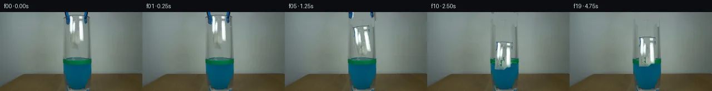
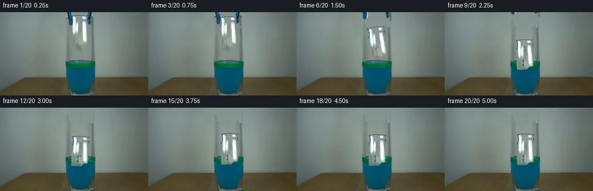
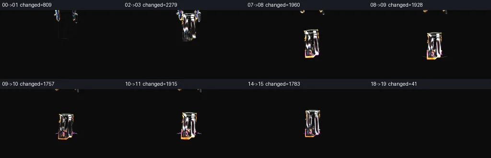

V0 · 初版 · 最终提交
![]()
Observable Generation Trace
把最终像素视频、Harness 冻结的每轮候选、真实工具事件和 Agent 自述放在同一页。可观测证据与模型自述分开标记，避免把“模型说它检查过”误当成真实工具调用。
![首帧]()
Static locked-off single-shot with fixed frame throughout filmed with constant framerate in real-time. The scene shows a realistic scientific demonstration. The scene only contains the described setup and actions. The blue-black grabber tool was holding the small crumpled piece of paper at the inner rim of the glass containing the blue liquid and the green water level marking. The blue-black grabber releases the small crumpled piece of paper into the glass containing blue liquid with a green band marking the water level.
首帧显示在左侧播放器初始画面。Track 权限、隔离和 tensor 一致性来自 run manifest，而不是 METHOD.md。
默认勾选初版和最终版；可选其他版本一起同步播放。仅检查图更新的连续重复快照已合并，回退旧视频仍保留为一次修订。
Observable events
来源：events.jsonl + run manifest
此 Track 禁止读取输出图片。逐轮预览由外部 Harness 自动冻结，只用于事后审计，生成 Agent 当时看不到这些页面。
Frozen candidates
每张图来自该 round 的真实 00 / 01 / 05 / 10 / 19 帧

pixels 5789023500930335 · code 228839caa5ca289d
--- previous/generate.py +++ current/generate.py @@ -0,0 +1,271 @@ +from pathlib import Path + +import numpy as np +from PIL import Image, ImageDraw, ImageFilter, ImageFont +from scipy.ndimage import binary_dilation, gaussian_filter + +import artifact_io + + +ROOT = Path(__file__).resolve().parent +W, H = 256, 144 + + +def smoothstep(v): + v = np.clip(v, 0.0, 1.0) + return v * v * (3.0 - 2.0 * v) + + +def make_background_estimate(src): + """Estimate the softly varying wall behind the central held objects.""" + srcf = src.astype(np.float32) + estimate = srcf.copy() + # Use narrow, clean strips immediately outside the central setup. This + # retains the source's row-by-row lighting and slight sensor texture. + for y in range(0, 84): + left = np.median(srcf[y, 101:111], axis=0) + right = np.median(srcf[y, 166:176], axis=0) + for x in range(108, 168): + u = (x - 108) / 59.0 + estimate[y, x] = left * (1.0 - u) + right * u + # A tiny blur avoids a conspicuous perfectly linear fill while remaining + # consistent with the already defocused background. + patch = Image.fromarray(np.uint8(np.clip(estimate[:84, 108:168], 0, 255))) + patch = patch.filter(ImageFilter.GaussianBlur(0.55)) + estimate[:84, 108:168] = np.asarray(patch) + return np.uint8(np.clip(estimate, 0, 255)) + + +def soft_mask(binary, sigma=0.65, gain=1.45): + a = gaussian_filter(binary.astype(np.float32), sigma=sigma) * gain + return np.uint8(np.clip(a, 0.0, 1.0) * 255.0) + + +def extract_layers(src, bg): + srcf, bgf = src.astype(np.float32), bg.astype(np.float32) + residual = np.linalg.norm(srcf - bgf, axis=2) + r, g, b = srcf.transpose(2, 0, 1) + + yy, xx = np.indices((H, W)) + paper_box = (xx >= 123) & (xx <= 151) & (yy >= 4) & (yy <= 58) + low_chroma = np.maximum.reduce([r, g, b]) - np.minimum.reduce([r, g, b]) < 36 + paper_seed = paper_box & low_chroma & (residual > 17) + # Keep the crumple's shaded folds together while preserving genuine holes. + paper_core = binary_dilation(paper_seed, iterations=1) & paper_box + paper_alpha = soft_mask(paper_core, 0.62, 1.65) + + blue_black = ((b > r + 24) & (b > g + 8)) | ( + (np.mean(srcf, axis=2) < np.mean(bgf, axis=2) - 31) & (residual > 35) + ) + left_box = (xx >= 113) & (xx <= 126) & (yy <= 25) + right_box = (xx >= 150) & (xx <= 162) & (yy <= 25) + left_alpha = soft_mask(binary_dilation(blue_black & left_box, iterations=1), 0.55, 1.7) + right_alpha = soft_mask(binary_dilation(blue_black & right_box, iterations=1), 0.55, 1.7) + + # Remove extracted pixels from the working plate. Masks overlap only in + # feathered margins; using their maximum gives a stable clean plate. + removal = np.maximum.reduce([paper_alpha, left_alpha, right_alpha]).astype(np.float32) / 255.0 + clean = srcf * (1.0 - removal[..., None]) + bgf * removal[..., None] + clean = np.uint8(np.clip(clean, 0, 255)) + return clean, paper_alpha, left_alpha, right_alpha + + +def sprite_crop(src, alpha, box): + x0, y0, x1, y1 = box + rgba = np.dstack((src[y0:y1, x0:x1], alpha[y0:y1, x0:x1])) + return Image.fromarray(rgba, "RGBA") + + +def place_sprite(canvas, sprite, center, angle=0.0, scale=(1.0, 1.0), tint=None): + w = max(1, int(round(sprite.width * scale[0]))) + h = max(1, int(round(sprite.height * scale[1]))) + obj = sprite.resize((w, h), Image.Resampling.BICUBIC) + obj = obj.rotate(angle, resample=Image.Resampling.BICUBIC, expand=True) + arr = np.array(obj) + if tint is not None: + # Tint only the specified lower world region after placement below. + pass … diff truncated; 184 more lines …
pixels 5789023500930335 · code d03a4ec55343b600
--- previous/generate.py
+++ current/generate.py
@@ -73,7 +73,7 @@
def sprite_crop(src, alpha, box):
x0, y0, x1, y1 = box
rgba = np.dstack((src[y0:y1, x0:x1], alpha[y0:y1, x0:x1]))
- return Image.fromarray(rgba, "RGBA")
+ return Image.fromarray(rgba)
def place_sprite(canvas, sprite, center, angle=0.0, scale=(1.0, 1.0), tint=None):
@@ -149,14 +149,14 @@
# The wet portion remains visible through the glass/liquid but loses a
# little contrast with depth.
arr[..., 3] *= 1.0 - depth * 0.10
- return Image.fromarray(np.uint8(np.clip(arr, 0, 255)), "RGBA")
+ return Image.fromarray(np.uint8(np.clip(arr, 0, 255)))
def make_frame(src, clean, paper, jaw_l, jaw_r, t):
if t == 0:
return src.copy()
- canvas = Image.fromarray(clean, "RGB").convert("RGBA")
+ canvas = Image.fromarray(clean).convert("RGBA")
# The two jaw caps part, then the whole grabber withdraws above frame.
open_amount = smoothstep((t - 1) / 4.0) * 3.2
@@ -169,7 +169,7 @@
if jaw_fade < 1.0:
a = np.array(obj)
a[..., 3] = np.uint8(a[..., 3].astype(np.float32) * jaw_fade)
- obj = Image.fromarray(a, "RGBA")
+ obj = Image.fromarray(a)
place_sprite(canvas, obj, (cx + direction * open_amount, 12.5 - retract),
angle=direction * open_amount * 0.7)
Final visual checks
Harness 保存的最终产物


Agent claims
以下文字由生成 Agent 撰写，不等同于工具证据
| Frame | Time shown by player | Planned state |
|---|---|---|
| 00 | 0.25 s | Exact supplied first frame; paper still pinched. |
| 01 | 0.50 s | Jaws relax by a fraction of a pixel; paper remains essentially held. |
| 02 | 0.75 s | Jaw tips part; paper begins to slip downward. |
| 03 | 1.00 s | Paper clears the grip, falling slowly with slight clockwise roll. |
| 04 | 1.25 s | Downward speed increases; grabber begins retracting upward. |
| 05 | 1.50 s | Paper descends on the vessel axis; a small lateral drift develops. |
| 06 | 1.75 s | Continued gravity-driven descent and modest rotation. |
| 07 | 2.00 s | Paper approaches the green-marked liquid surface. |
| 08 | 2.25 s | Lower folds touch the surface; the paper compresses slightly. |
| 09 | 2.50 s | Impact: paper enters the blue liquid, with a restrained splash. |
| 10 | 2.75 s | Maximum downward excursion; lower folds darken from wetting. |
| 11 | 3.00 s | Buoyancy reverses motion; ripples spread from the contact point. |
| 12 | 3.25 s | Paper rises slightly and tilts back; splash droplets fall. |
| 13 | 3.50 s | First small bob downward; concentric ripples weaken. |
| 14 | 3.75 s | Paper rebounds upward, partly afloat at the level band. |
| 15 | 4.00 s | Smaller secondary bob and gentle counter-rotation. |
| 16 | 4.25 s | Paper settles lower as absorbed liquid darkens its submerged edge. |
| 17 | 4.50 s | Only a faint surface oscillation remains; grabber is mostly out of view. |
| 18 | 4.75 s | Paper nearly still, floating partly submerged. |
| 19 | 5.00 s | Final settled state with very weak residual ripple. |
The intended motion is continuous: slow release, accelerating fall, one clear contact event, then damped buoyant bobbing. No cut, zoom, camera motion, or new object is introduced.
I generated the sequence entirely with local Python, NumPy, SciPy, and Pillow pixel operations. I did not use an image viewer, image-reading tool, external model, web service, or rendering engine.
The source was inspected numerically (RGB statistics, thresholded color masks, edge strength, row/column spans, and coordinate samples). A clean plate behind the held objects was estimated row by row from nearby source pixels, preserving the locked camera, original wall gradient, glass, table, and exposure.
The bright irregular paper and the two blue-black jaw caps were separated with coordinate-bounded RGB residual and color masks. Their alpha edges were lightly feathered. The paper is translated and rotated along a hand-authored, gravity-like trajectory; the jaw caps part and withdraw upward. At contact, the paper is slightly compressed, its pixels below the measured liquid line are progressively tinted by sampled blue-liquid color, and its vertical motion changes to a damped buoyant bob.
Surface effects are small analytic Pillow overlays: an approach shadow, narrow elliptical ripples, two short splash arcs, a few droplets, and a weak foreground glass/liquid glint. They are confined to the measured vessel region. No camera motion or global filter is applied.
artifact_io.save writes the packed uint32 0xRRGGBB tensor, PNG frames,
inspection contact sheet, and standalone HTML player. generate.py separately
creates transition_check.png, then verifies that frame 00 exactly equals the
source and that every PNG decodes identically to its corresponding tensor slice.